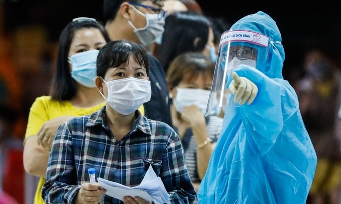

|  |
Số ca nhiểm ở TP HCM vượt 5.000
Với 714 ca nhiễm được công bố hôm 3/7,
số ca bệnh tại TP HCM vượt 5.000 - đây là tình huống nghiêm trọng trong kịch bản ứng phó thành phố đặt ra vào giữa tháng 5. Thời điểm TP HCM xây dựng 3 kịch bản (dưới 100 ca; 1.000 ca; 5.000 ca) ... |